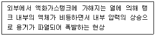
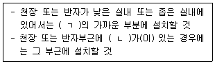
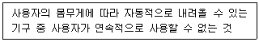
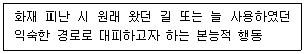
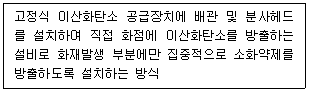
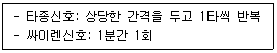
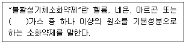
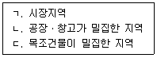

경비지도사-2차(소방학) (2022-11-12 기출문제)
1. 포소화약제의 주된 소화효과는?
- 억제
- 희석
- 제거
- 질식
(정답률: 알수없음)

2. 다음에서 설명하고 있는 것은?

- 증기운폭발(UVCE)
- 폭연(Deflagration)
- 비등액체팽창증기폭발(BLEVE)
- 보일오버(Boil-over)
(정답률: 알수없음)
3. 불완전 연소할 때 발생되는 무미ㆍ무취의 가스로서 인체 내의 헤모글로빈과 결합하여 산소의 운반기능을 약화시켜 질식을 유발하는 연소가스는?
- 일산화탄소
- 암모니아
- 아크로레인
- 황화수소
(정답률: 알수없음)
4. 위험물안전관리법령상 제1류 위험물에 관한 저장 및 취급방법으로 옳지 않은 것은?
- 가열, 충격, 마찰 등을 피해야 한다.
- 알칼리금속 과산화물은 물속에 넣어 보관한다.
- 용기의 파손, 전도를 방지해야 한다.
- 통풍이 잘되는 곳에 저장한다.
(정답률: 알수없음)
5. 수소의 공기 중 연소범위(Vol %)로 옳은 것은?
- 1 ∼ 13
- 2.1 ∼ 9.5
- 2.5 ∼ 20
- 4 ∼ 75
(정답률: 알수없음)
6. 위험물안전관리법령상 제4류 위험물의 성질은?
- 산화성고체
- 가연성고체
- 인화성액체
- 산화성액체
(정답률: 알수없음)
7. 전기적 점화원인 정전기의 방지대책으로 옳지 않은 것은?
- 공기 중 상대습도를 30 % 이하로 낮게 한다.
- 접지시설을 한다.
- 공기를 이온화시킨다.
- 전기전도성이 큰 물체를 사용한다.
(정답률: 알수없음)
8. 물소화약제에 관한 내용으로 옳지 않은 것은?
- 구하기 쉽고 경제적이다.
- 변질의 우려가 적고 장기간 보관이 가능하다.
- 냉각효과가 우수하다.
- 칼륨, 나트륨과 같은 가연성 금속의 화재에 사용한다.
(정답률: 알수없음)
9. 위험물안전관리법령에서 정하고 있는 제2류 위험물의 품명과 지정수량의 연결로 옳지 않은 것은?
- 황화린 – 100킬로그램
- 적린 – 100킬로그램
- 유황 – 500킬로그램
- 철분 - 500킬로그램
(정답률: 알수없음)
10. 스테판 - 볼츠만의 법칙과 가장 관련이 있는 열전달 방법은?
- 전도
- 복사
- 대류
- 발화
(정답률: 알수없음)
11. 건축물의 화재성장 과정 중 플래쉬오버를 지나 모든 가연물의 연소가 최대로 확대되는 단계는?
- 초기
- 성장기
- 최성기
- 감쇠기
(정답률: 알수없음)
12. 화재예방, 소방시설 설치ㆍ유지 및 안전관리에 관한 법령상 소방시설등의 자체점검에 관한 내용으로 옳지 않은 것은?
- 자체점검은 작동기능점검과 종합정밀점검으로 구분한다.
- 작동기능점검은 해당 특정소방대상물의 관계인ㆍ소방안전관리자 또는 소방시설관리업자가 점검할 수 있다.
- 작동기능점검은 2년마다 1회 실시한다.
- 스프링클러설비가 설치된 특정소방대상물은 종합정밀점검 대상이다.
(정답률: 알수없음)
13. 연돌효과(Stack Effect)에 영향을 미치는 주된 요소가 아닌 것은?
- 건축물의 높이
- 건축물의 내ㆍ외부 온도
- 건축물 외벽의 기밀도
- 건축물의 바닥면적 및 마감재
(정답률: 알수없음)
14. 건축물의 피난ㆍ방화구조 등의 기준에 관한 규칙상 피난안전구역에 관한 내용으로 옳지 않은 것은?
- 내부마감재료는 준불연재료로 설치할 것
- 건축물의 내부에서 피난안전구역으로 통하는 계단은 특별피난계단의 구조로 설치할 것
- 비상용 승강기는 피난안전구역에서 승하차 할 수 있는 구조로 설치할 것
- 관리사무소 또는 방재센터 등과 긴급연락이 가능한 경보 및 통신시설을 설치할 것
(정답률: 알수없음)
15. 화재예방, 소방시설 설치ㆍ유지 및 안전관리에 관한 법령상 자위소방대에 관한 내용으로 옳지 않은 것은?
- 화재 발생 시 비상연락, 초기소화 및 피난유도를 위해 자위소방대를 편성할 수 있다.
- 화재 발생 시 인명ㆍ재산피해 최소화를 위한 조치를 수행하기 위하여 자위소방대를 편성할 수 있다.
- 해당 소방안전관리대상물에 근무하는 사람의 근무위치, 근무인원 등을 고려하여 편성하여야 한다.
- 시ㆍ도지사는 자위소방대의 구성, 운영 및 교육, 초기대응체계의 편성ㆍ운영 등에 필요한 지침을 작성하여 배포하여야 한다.
(정답률: 알수없음)
16. 액화석유가스(LPG)에 관한 내용으로 옳지 않은 것은?
- 공기 중에서 쉽게 연소, 폭발한다.
- 기화 시 공기보다 가벼워 누출되면 천장에 체류한다.
- 순수한 LPG는 색깔이 없고, 냄새도 없다.
- 액화 시 체적이 축소되므로 보관 및 수송이 용이하다.
(정답률: 알수없음)
17. 건축물의 화재하중 산정에 영향을 미치는 주된 요소가 아닌 것은?
- 가연물의 중량
- 피로하중
- 화재실의 바닥면적
- 가연물 단위중량 당 발열량
(정답률: 알수없음)
18. 소방기본법상 국민의 안전의식과 화재에 대한 경각심을 높이고 안전문화를 정착시키기 위해 정한 소방의 날은?
- 매년 1월 19일
- 매년 9월 11일
- 매년 11월 9일
- 매년 12월 12일
(정답률: 알수없음)
19. 건축법령상 용어의 정의로 옳지 않은 것은?
- “난연재료”란 불에 잘 타지 아니하는 성능을 가진 재료로서 국토교통부령으로 정하는 기준에 적합한 재료를 말한다.
- “준불연재료”란 불연재료에 준하는 성질을 가진 재료로서 국토교통부령으로 정하는 기준에 적합한 재료를 말한다.
- “불연재료”란 불에 타지 아니하는 성질을 가진 재료로서 국토교통부령으로 정하는 기준에 적합한 재료를 말한다.
- “방화구조”란 화재에 견딜 수 있는 성능을 가진 구조로서 국토교통부령으로 정하는 기준에 적합한 구조를 말한다.
(정답률: 알수없음)
20. 건축물의 피난ㆍ방화구조 등의 기준에 관한 규칙상 방화벽에 설치하는 출입문의 높이 기준은?
- 2.5미터 이하
- 2.7미터 이하
- 3.0미터 이하
- 3.5미터 이하
(정답률: 알수없음)
21. 자동화재탐지설비 및 시각경보장치의 화재안전기준(NFSC)상 연기감지기 설치 기준의 일부이다. ( )에 들어갈 것으로 옳은 것은?

- ㄱ: 창문, ㄴ: 벽
- ㄱ: 배기구, ㄴ: 공기 유입구
- ㄱ: 출입구, ㄴ: 배기구
- ㄱ: 벽, ㄴ: 창문
(정답률: 알수없음)
22. 누전경보기에서 누설전류를 검출하여 수신기로 신호를 전달하는 기기는?
- 정온식 열감지기
- 영상변류기(ZCT)
- 광전식 연기감지기
- 누설동축케이블
(정답률: 알수없음)
23. 가스누설경보기의 화재안전기준(NFSC)상 가연성가스 경보기 중 단독형 경보기의 가스누설 음향장치는 수신부로부터 1 m 떨어진 위치에서 몇 데시벨(dB) 이상의 음압이어야 하는가?
- 40
- 50
- 60
- 70
(정답률: 알수없음)
24. 다음에서 설명하고 있는 피난기구는?

- 간이완강기
- 완강기
- 피난사다리
- 승강식피난기
(정답률: 알수없음)
25. 다음 중 연기감지기에 해당하는 것은?
- 광전식 감지기
- 차동식 감지기
- 정온식 감지기
- 열전대식 감지기
(정답률: 알수없음)
26. 피난구유도등의 표시면 색상으로 옳은 것은?
- 백색바탕에 흑색문자
- 흑색바탕에 백색문자
- 녹색바탕에 백색문자
- 백색바탕에 녹색문자
(정답률: 알수없음)
27. 유도등 및 유도표지의 화재안전기준(NFSC)상 복도통로유도등의 설치 높이는?
- 바닥으로부터 1 m 초과
- 바닥으로부터 1 m 이하
- 바닥으로부터 1.5 m 초과
- 바닥으로부터 1.5 m 이하
(정답률: 알수없음)
28. 다음에서 설명하고 있는 화재 피난 시 인간의 행동특성은?

- 좌회본능
- 추종본능
- 귀소본능
- 지광본능
(정답률: 알수없음)
29. 습식스프링클러설비에 관한 내용으로 옳지 않은 것은?
- 평상시 배관 내에 물이 차 있다.
- 겨울철 추운 날씨에 동결 우려가 있다.
- 열에 의해 폐쇄형 헤드가 개방되면 동작한다.
- 변전실 등 전기설비가 많은 곳에 주로 사용한다.
(정답률: 알수없음)
30. 다음에서 설명하고 있는 이산화탄소 소화설비의 방식은?

- 국소방출방식
- 전역방출방식
- 호스릴방식
- 교차회로방식
(정답률: 알수없음)
31. 소방기본법령상 다음에 해당하는 소방신호는?

- 경계신호
- 발화신호
- 해제신호
- 훈련신호
(정답률: 알수없음)
32. ABC급 화재에 모두 적응성이 있는 분말소화약제는?
- 제1종
- 제2종
- 제3종
- 제4종
(정답률: 알수없음)
33. 이산화탄소 소화설비에 관한 내용으로 옳지 않은 것은?
- 화재 진화 후 잔존물이 적다.
- 전기절연성이 적어 전기화재에 적응성이 없다.
- 주된 소화효과는 질식소화이다.
- 증거보존이 양호하여 화재원인 조사가 쉽다.
(정답률: 알수없음)
34. 할로겐화합물 소화약제의 적응성에 관한 내용으로 옳지 않은 것은?
- 전기화재에 사용한다.
- 금속물질(Na, K, Al, Mg 등)화재에 사용한다.
- 유류화재에 사용한다.
- 박물관, 미술관, 도서관 등에 사용한다.
(정답률: 알수없음)
35. 제연설비의 화재안전기준(NFSC)상 하나의 제연구역 면적기준은?
- 1,000 m2 이내
- 2,000 m2 이내
- 3,000 m2 이내
- 5,000 m2 이내
(정답률: 알수없음)
36. 불활성기체소화약제에 관한 내용이다. ( )에 들어갈 내용으로 옳은 것은?

- 질소
- 염소
- 브롬
- 요오드
(정답률: 알수없음)
37. 소방기본법상 화재경계지구로 지정할 수 있는 지역을 모두 고른 것은?

- ㄱ, ㄴ
- ㄱ, ㄷ
- ㄴ, ㄷ
- ㄱ, ㄴ, ㄷ
(정답률: 알수없음)
38. 위험물안전관리법령상 제6류 위험물이 아닌 것은?
- 과염소산
- 나트륨
- 질산
- 과산화수소
(정답률: 알수없음)
39. 소방기본법령에서 정하고 있는 특수가연물의 품명과 수량의 연결로 옳지 않은 것은?
- 면화류 - 200킬로그램 이상
- 나무껍질 및 대팻밥 - 400킬로그램 이상
- 넝마 및 종이부스러기 - 1,000킬로그램 이상
- 가연성고체류 - 1,000킬로그램 이상
(정답률: 알수없음)
40. 소화기의 적응 화재별 표시로 옳지 않은 것은?
- 유류화재는 'O'로 표시한다.
- 전기화재는 'C'로 표시한다.
- 일반화재는 'A'로 표시한다.
- 주방화재는 'K'로 표시한다.
(정답률: 알수없음)